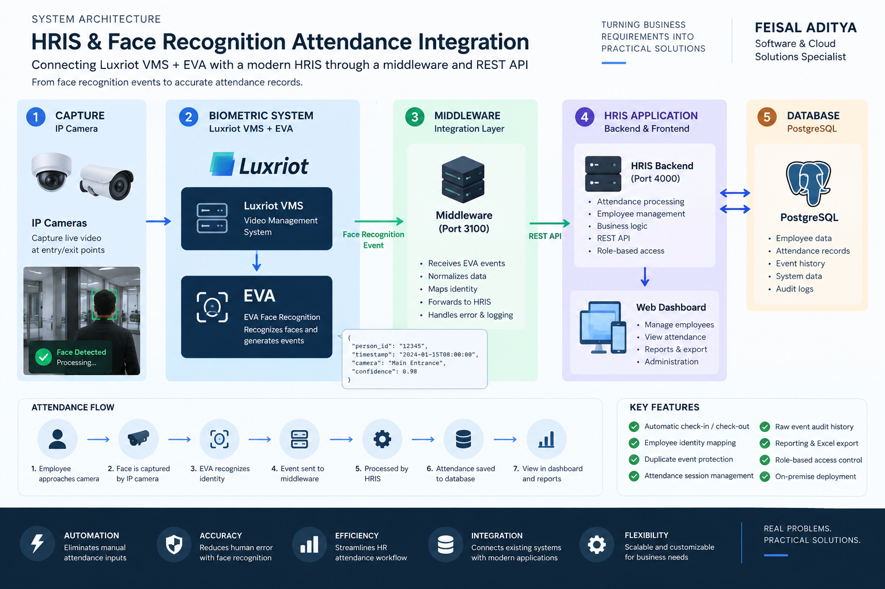
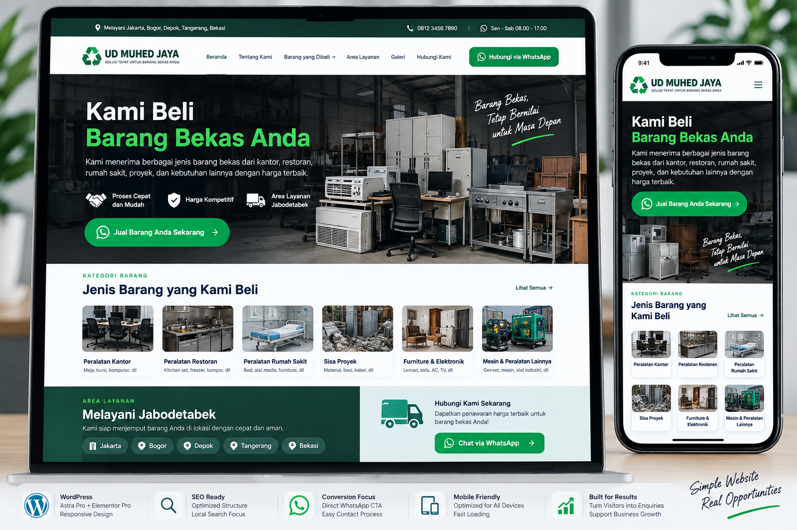
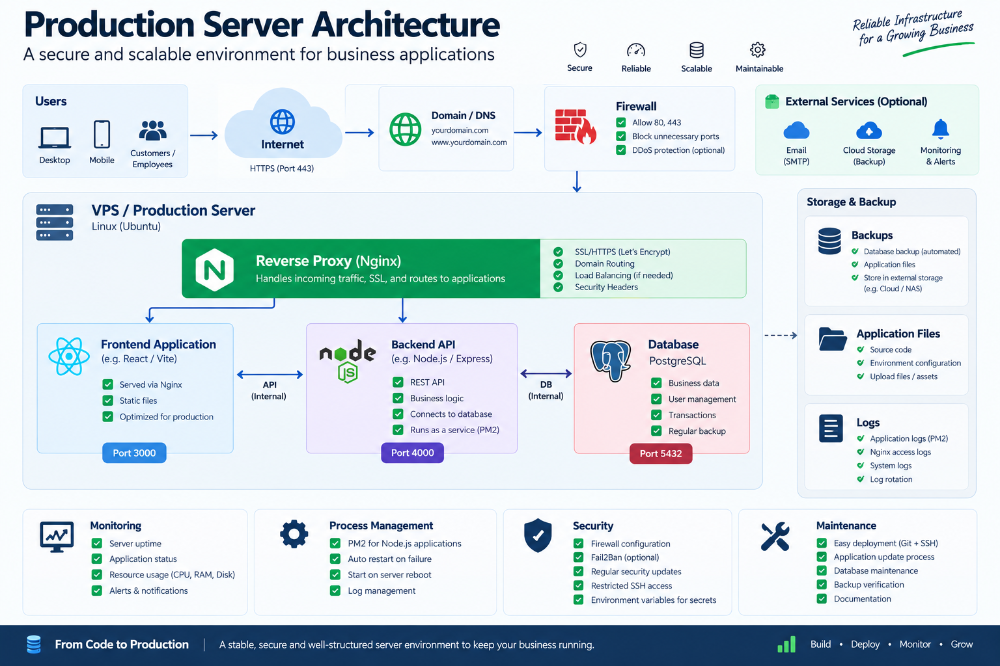
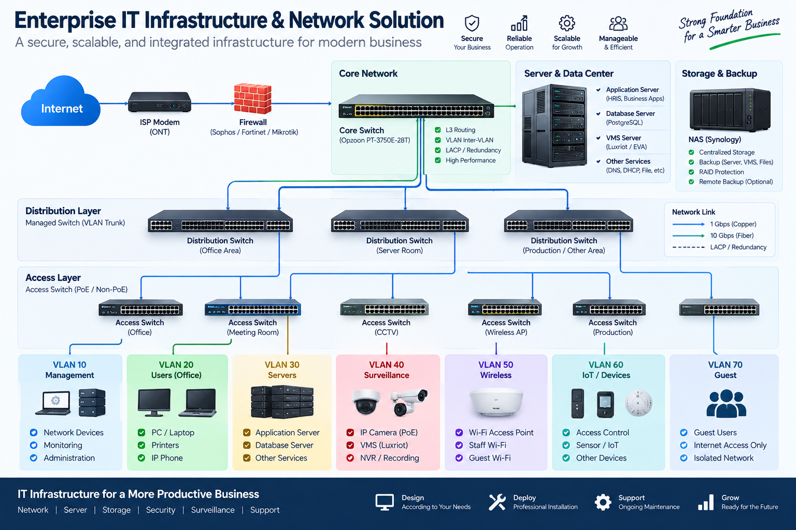
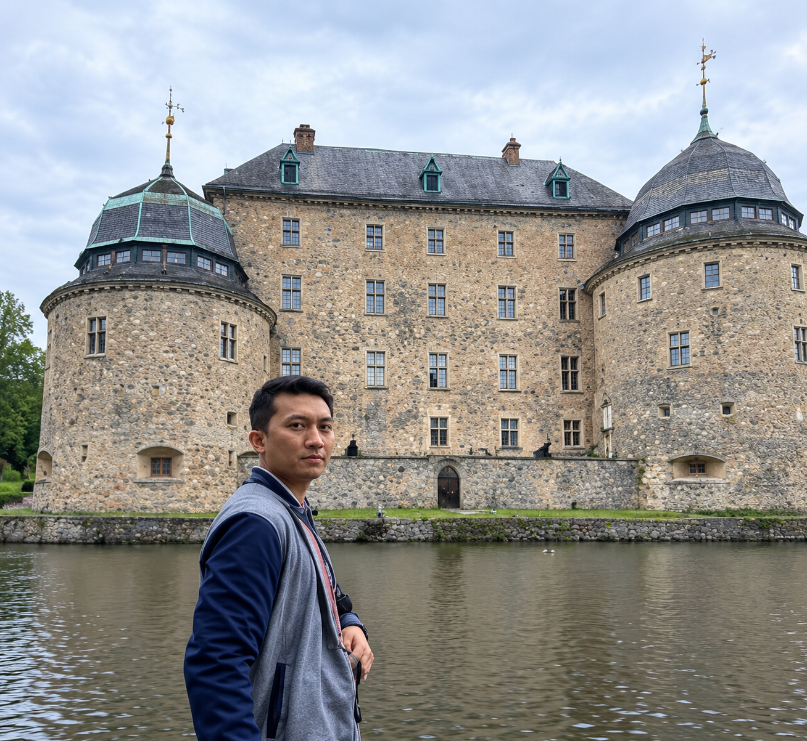

AI
Otomasi Bisnis & AI
Mengotomatisasi pekerjaan berulang, menghubungkan tools dan mengurangi pekerjaan operasional manual.
- Workflow automation
- Proses berbantuan AI
- Otomasi API
Saya membantu bisnis mengubah ide, masalah operasional dan kebutuhan teknis menjadi sistem yang dapat digunakan — mulai dari otomasi dan aplikasi web hingga integrasi, deployment dan infrastruktur.
Solusi end-to-end yang menghubungkan kebutuhan bisnis, proses dan teknologi.
Mengotomatisasi pekerjaan berulang, menghubungkan tools dan mengurangi pekerjaan operasional manual.
Menghubungkan aplikasi, database dan layanan menjadi satu alur kerja operasional.
Membangun website bisnis yang berfokus pada kemudahan penggunaan, konversi dan kebutuhan bisnis.
Menerapkan aplikasi ke lingkungan produksi Linux dengan dukungan database dan jaringan.
Merancang dan mendukung jaringan, server, storage, backup dan sistem surveillance.
Contoh pekerjaan nyata pada sistem, aplikasi dan infrastruktur.

Mengintegrasikan Luxriot VMS dan EVA dengan HRIS melalui middleware, REST API dan PostgreSQL.
Lihat Studi Kasus →
Sistem manajemen bisnis berbasis Excel untuk penjualan, biaya, inventory, CRM, cash flow, profitabilitas dan analitik.
Lihat Studi Kasus →
Website WordPress yang dirancang untuk mengubah traffic pencarian lokal menjadi enquiry melalui pesan yang jelas dan jalur WhatsApp.
Lihat Studi Kasus →
Menerapkan aplikasi bisnis ke lingkungan produksi Linux dengan service aplikasi, PostgreSQL dan jaringan.
Lihat Studi Kasus →
Infrastruktur jaringan, server, storage, backup dan surveillance yang terstruktur untuk lingkungan bisnis.
Lihat Studi Kasus →Proses praktis yang dimulai dari memahami masalah sebelum memilih teknologi.
Kebutuhan bisnis dan alur kerja.
Solusi dan arsitektur.
Kembangkan dan konfigurasi.
Implementasikan dan hubungkan sistem.
Uji perilaku sistem.
Troubleshoot dan tingkatkan.
Dari kebutuhan bisnis hingga sistem yang dapat digunakan.
Memahami masalah, workflow dan hasil yang diinginkan.
Menerjemahkan kebutuhan menjadi workflow dan arsitektur praktis.
Membangun aplikasi, integrasi dan workflow otomatis.
Menerapkan solusi ke server, jaringan dan lingkungan produksi.
Solusi praktis yang benar-benar dapat digunakan oleh pengguna.
Saya adalah profesional IT dengan pengalaman hands-on di networking, infrastructure, software systems, database dan teknologi bisnis.
Pekerjaan saya berada di antara kebutuhan bisnis dan implementasi teknis — membantu mengubah masalah operasional menjadi sistem yang dapat diterapkan dan digunakan.

Butuh otomasi, website bisnis, integrasi sistem, deployment aplikasi atau dukungan infrastruktur IT? Mari diskusikan masalahnya terlebih dahulu.